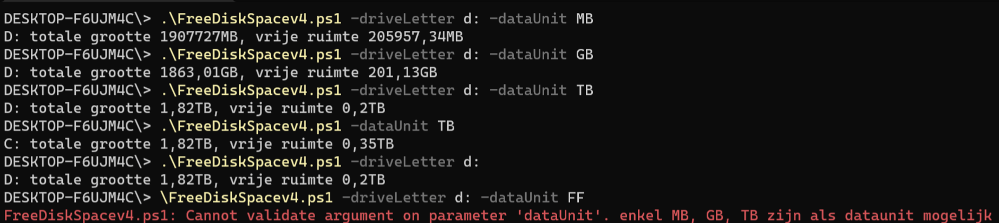
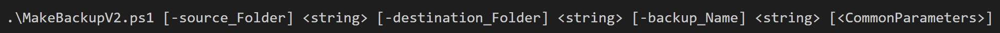
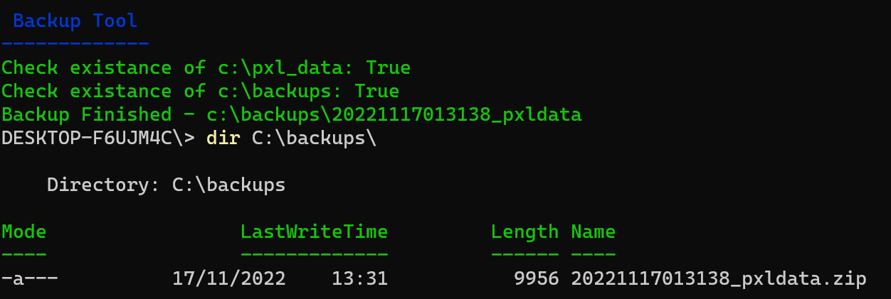
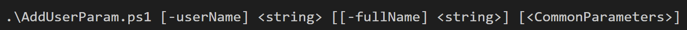

1. Aantal bestanden
1.1 NumberOfFiles.ps1
Maak scripts/NumberOfFiles.ps1. Het script:
- ontvangt een directory als eerste positionele argument;
- controleert dat het pad een bestaande map is;
- telt recursief alle bestanden;
- toont het volledige resultaat van
Measure-Object.
Voorbeeld:
./scripts/NumberOfFiles.ps1 C:\powershell
scripts/NumberOfFiles.ps1<#
.SYNOPSIS
Telt alle bestanden in een map.
.DESCRIPTION
Telt recursief alle bestanden in de opgegeven map en toont het volledige
resultaat van Measure-Object.
.PARAMETER directory
Een bestaande map. Eerste positionele argument.
.NOTES
Author: Angelo Switon (PXL Student)
.EXAMPLE
./scripts/NumberOfFiles.ps1 C:\powershell
#>
[CmdletBinding()]
param(
[Parameter(Mandatory, Position = 0)]
[ValidateScript({ Test-Path -Path $_ -PathType Container }, ErrorMessage = '{0} is geen bestaande map.')]
[string]$directory
)
Get-ChildItem -Path $directory -Recurse -File | Measure-Object[Parameter(Mandatory, Position = 0)] maakt directory verplicht en het eerste positionele argument. [ValidateScript({ Test-Path -Path $_ -PathType Container })] controleert vóór de rest van het script dat het pad een bestaande map is. Get-ChildItem -Recurse -File geeft alle bestanden, ook in de submappen.Syntax:
Get-Command .\scripts\NumberOfFiles.ps1 -Syntax → .\NumberOfFiles.ps1 [-directory] <string> [<CommonParameters>]Geldig:
./scripts/NumberOfFiles.ps1 C:\powershell → het volledige Measure-Object-resultaat (Count, Average, Sum, ...)Ongeldig:
./scripts/NumberOfFiles.ps1 C:\bestaatniet → Cannot validate argument on parameter 'directory'. C:\bestaatniet is geen bestaande map.Met diagnostische uitvoer via
Write-Verbose en de totale grootte erbij (Course, hoofdstuk 09):[CmdletBinding()]
param(
[Parameter(Mandatory, Position = 0)]
[ValidateScript({ Test-Path -Path $_ -PathType Container }, ErrorMessage = '{0} is geen bestaande map.')]
[string]$directory
)
Write-Verbose "Bestanden tellen in: $directory"
Get-ChildItem -Path $directory -Recurse -File -ErrorAction SilentlyContinue |
Measure-Object -Property Length -Sum./scripts/NumberOfFiles.ps1 C:\powershell -Verbose → eerst de melding VERBOSE: Bestanden tellen in: C:\powershell, daarna het resultaat met Count en Sum (de totale grootte in bytes).[CmdletBinding()] maakt -Verbose mogelijk. Zonder -Verbose blijft de melding verborgen.
1.2 NumberOfFilesv2.ps1
Maak scripts/NumberOfFilesv2.ps1 met dezelfde parameter en telling, maar toon één leesbare zin met map en aantal.

scripts/NumberOfFilesv2.ps1<#
.SYNOPSIS
Telt alle bestanden in een map en toont een leesbare zin.
.DESCRIPTION
Telt recursief alle bestanden in de opgegeven map en toont de map en het
aantal bestanden in een zin.
.PARAMETER directory
Een bestaande map. Eerste positionele argument.
.NOTES
Author: Angelo Switon (PXL Student)
.EXAMPLE
./scripts/NumberOfFilesv2.ps1 C:\powershell
#>
[CmdletBinding()]
param(
[Parameter(Mandatory, Position = 0)]
[ValidateScript({ Test-Path -Path $_ -PathType Container }, ErrorMessage = '{0} is geen bestaande map.')]
[string]$directory
)
$aantal = (Get-ChildItem -Path $directory -Recurse -File | Measure-Object).Count
Write-Output "Onder de map $directory bevinden zich $aantal bestanden."(... | Measure-Object).Count nemen we alleen het getal uit het resultaat en zetten we het in een zin.Geldig:
./scripts/NumberOfFilesv2.ps1 C:\powershell → Onder de map C:\powershell bevinden zich 16 bestanden.Ongeldig:
./scripts/NumberOfFilesv2.ps1 C:\bestaatniet → Cannot validate argument on parameter 'directory'. C:\bestaatniet is geen bestaande map.Met de totale grootte in MB en de
-f-operator:$meting = Get-ChildItem -Path $directory -Recurse -File -ErrorAction SilentlyContinue |
Measure-Object -Property Length -Sum
'Onder de map {0} bevinden zich {1} bestanden ({2:N2} MB).' -f $directory, $meting.Count, ($meting.Sum / 1MB)Onder de map C:\powershell bevinden zich 16 bestanden (0,94 MB).{0}, {1} en {2:N2} worden ingevuld met de waarden na -f, in die volgorde.
2. Vrije schijfruimte
Gebruik voor de volgende scripts Get-CimInstance -ClassName CIM_LogicalDisk en beperk het resultaat tot lokale schijven met DriveType 3.
2.1 FreeDiskSpace.ps1
Maak scripts/FreeDiskSpace.ps1:
driveLetteris een verplicht positioneel argument zoalsC:;- valideer de vorm van de stationsletter;
- toon het gevonden CIM-object.

scripts/FreeDiskSpace.ps1<#
.SYNOPSIS
Toont het CIM-object van een lokale schijf.
.DESCRIPTION
Zoekt met Get-CimInstance de lokale schijf (DriveType 3) met de opgegeven
stationsletter en toont het CIM-object.
.PARAMETER driveLetter
Stationsletter zoals C:. Verplicht en positioneel.
.NOTES
Author: Angelo Switon (PXL Student)
.EXAMPLE
./scripts/FreeDiskSpace.ps1 C:
#>
[CmdletBinding()]
param(
[Parameter(Mandatory, Position = 0)]
[ValidatePattern('\A[A-Z]:\z', ErrorMessage = '{0} is geen geldige stationsletter (bv. C:).')]
[string]$driveLetter
)
Get-CimInstance -ClassName CIM_LogicalDisk |
Where-Object DriveType -eq 3 |
Where-Object DeviceID -eq $driveLetter[ValidatePattern('\A[A-Z]:\z')] aanvaardt alleen precies één letter gevolgd door :. ValidatePattern is niet hoofdlettergevoelig, dus c: mag ook.Where-Object DriveType -eq 3 houdt alleen lokale schijven over, daarna kiezen we de schijf met Where-Object DeviceID -eq $driveLetter.Let op:
Get-CimInstance -ClassName CIM_LogicalDisk -Filter 'DriveType = 3' geeft de fout Invalid query, omdat de klasse CIM_LogicalDisk geen DriveType kent in een query. Daarom filteren we met Where-Object.Geldig:
./scripts/FreeDiskSpace.ps1 c: → het CIM-object met DeviceID, DriveType, ProviderName, VolumeName, Size, FreeSpaceOngeldig:
./scripts/FreeDiskSpace.ps1 cc → Cannot validate argument on parameter 'driveLetter'. cc is geen geldige stationsletter (bv. C:).Alleen de nuttige properties tonen:
Get-CimInstance -ClassName CIM_LogicalDisk | Where-Object DriveType -eq 3 | Where-Object DeviceID -eq $driveLetter | Select-Object DeviceID, VolumeName, Size, FreeSpaceHet patroon
\A[A-Z]:\z uitgelegd: \A = begin, [A-Z] = één letter, : = een dubbelpunt, \z = einde. ValidatePattern is niet hoofdlettergevoelig, dus c: mag ook.
2.2 FreeDiskSpacev2.ps1
Maak versie 2. Toon één zin met stationsletter, totale grootte en vrije ruimte in bytes.

scripts/FreeDiskSpacev2.ps1<#
.SYNOPSIS
Toont de totale grootte en vrije ruimte van een lokale schijf.
.DESCRIPTION
Zoekt de lokale schijf (DriveType 3) met de opgegeven stationsletter en
toont de totale grootte en de vrije ruimte in bytes.
.PARAMETER driveLetter
Stationsletter zoals C:. Verplicht en positioneel.
.NOTES
Author: Angelo Switon (PXL Student)
.EXAMPLE
./scripts/FreeDiskSpacev2.ps1 C:
#>
[CmdletBinding()]
param(
[Parameter(Mandatory, Position = 0)]
[ValidatePattern('\A[A-Z]:\z', ErrorMessage = '{0} is geen geldige stationsletter (bv. C:).')]
[string]$driveLetter
)
$disk = Get-CimInstance -ClassName CIM_LogicalDisk |
Where-Object DriveType -eq 3 |
Where-Object DeviceID -eq $driveLetter
Write-Output "$driveLetter totale grootte $($disk.Size), vrije ruimte $($disk.FreeSpace)"$disk en tonen de properties Size en FreeSpace (in bytes) met $( ) in de tekst.Geldig:
./scripts/FreeDiskSpacev2.ps1 c: → c: totale grootte 1999805366272, vrije ruimte 405082587136Ongeldig:
./scripts/FreeDiskSpacev2.ps1 c → Cannot validate argument on parameter 'driveLetter'. c is geen geldige stationsletter (bv. C:).Ook het percentage vrije ruimte tonen (Course, hoofdstuk 08):
$procent = [math]::Round($disk.FreeSpace / $disk.Size * 100, 1)
Write-Output "$driveLetter totale grootte $($disk.Size), vrije ruimte $($disk.FreeSpace) ($procent% vrij)"c: totale grootte 1023027441664, vrije ruimte 605271633920 (59.2% vrij)In een tekst tussen dubbele aanhalingstekens toont PowerShell een getal altijd met een punt.
Met scheidingstekens per duizendtal, leesbaarder:
'{0:N0}' -f $disk.Size → 1.023.027.441.664
2.3 FreeDiskSpacev3.ps1
Maak versie 3. Wanneer de gebruiker geen stationsletter meegeeft, gebruikt het script automatisch C:.

scripts/FreeDiskSpacev3.ps1<#
.SYNOPSIS
Toont de totale grootte en vrije ruimte van een lokale schijf.
.DESCRIPTION
Zoekt de lokale schijf (DriveType 3) met de opgegeven stationsletter en
toont de totale grootte en de vrije ruimte in bytes. Zonder stationsletter
wordt C: gebruikt.
.PARAMETER driveLetter
Stationsletter zoals C:. Optioneel, standaard C:.
.NOTES
Author: Angelo Switon (PXL Student)
.EXAMPLE
./scripts/FreeDiskSpacev3.ps1
.EXAMPLE
./scripts/FreeDiskSpacev3.ps1 D:
#>
[CmdletBinding()]
param(
[Parameter(Position = 0)]
[ValidatePattern('\A[A-Z]:\z', ErrorMessage = '{0} is geen geldige stationsletter (bv. C:).')]
[string]$driveLetter = 'C:'
)
$disk = Get-CimInstance -ClassName CIM_LogicalDisk |
Where-Object DriveType -eq 3 |
Where-Object DeviceID -eq $driveLetter
Write-Output "$driveLetter totale grootte $($disk.Size), vrije ruimte $($disk.FreeSpace)"= 'C:' is de standaardwaarde. Omdat de parameter niet meer Mandatory is, mag de gebruiker hem weglaten.Syntax:
.\FreeDiskSpacev3.ps1 [[-driveLetter] <string>] [<CommonParameters>] (buitenste haken = optioneel)Standaardwaarde:
./scripts/FreeDiskSpacev3.ps1 → C: totale grootte 1999805366272, vrije ruimte 405065687040Zelf gekozen:
./scripts/FreeDiskSpacev3.ps1 c: → c: totale grootte ...Tonen of de gebruiker zelf een stationsletter gaf, of dat de standaardwaarde gebruikt werd (Course, hoofdstuk 09):
Write-Verbose "Stationsletter meegegeven: $($PSBoundParameters.ContainsKey('driveLetter'))"./scripts/FreeDiskSpacev3.ps1 -Verbose → VERBOSE: Stationsletter meegegeven: False (standaard C:)./scripts/FreeDiskSpacev3.ps1 C: -Verbose → VERBOSE: Stationsletter meegegeven: True$PSBoundParameters bevat alleen de parameters die de gebruiker echt meegaf, niet de standaardwaarden.
2.4 FreeDiskSpacev4.ps1
Maak versie 4 met:
driveLetter, standaardC:;dataUnit, standaardTB;- alleen
MB,GBenTBals geldige eenheden; - totale en vrije ruimte afgerond op twee decimalen;
- een duidelijke fout wanneer de schijf niet bestaat.
Test alle eenheden, de standaardwaarden en minstens één ongeldige eenheid.

scripts/FreeDiskSpacev4.ps1<#
.SYNOPSIS
Toont de totale grootte en vrije ruimte van een lokale schijf in MB, GB of TB.
.DESCRIPTION
Zoekt de lokale schijf (DriveType 3) met de opgegeven stationsletter en
toont de totale grootte en de vrije ruimte, afgerond op twee decimalen,
in de gekozen eenheid. Bestaat de schijf niet, dan volgt een foutmelding.
.PARAMETER driveLetter
Stationsletter zoals C:. Optioneel, standaard C:.
.PARAMETER dataUnit
Eenheid: MB, GB of TB. Optioneel, standaard TB.
.NOTES
Author: Angelo Switon (PXL Student)
.EXAMPLE
./scripts/FreeDiskSpacev4.ps1
.EXAMPLE
./scripts/FreeDiskSpacev4.ps1 -driveLetter D: -dataUnit GB
#>
[CmdletBinding()]
param(
[Parameter(Position = 0)]
[ValidateScript({ Get-CimInstance -ClassName CIM_LogicalDisk | Where-Object DriveType -eq 3 | Where-Object DeviceID -eq $_ }, ErrorMessage = 'De schijf {0} bestaat niet of is geen lokale schijf.')]
[ValidatePattern('\A[A-Z]:\z', ErrorMessage = '{0} is geen geldige stationsletter (bv. C:).')]
[string]$driveLetter = 'C:',
[Parameter(Position = 1)]
[ValidateSet('MB', 'GB', 'TB', ErrorMessage = 'Enkel MB, GB, TB zijn als dataUnit mogelijk.')]
[string]$dataUnit = 'TB'
)
$disk = Get-CimInstance -ClassName CIM_LogicalDisk |
Where-Object DriveType -eq 3 |
Where-Object DeviceID -eq $driveLetter
# Het aantal bytes per eenheid opzoeken in een hashtable
$delers = @{ MB = 1MB; GB = 1GB; TB = 1TB }
$deler = $delers[$dataUnit]
$totaal = [math]::Round($disk.Size / $deler, 2)
$vrij = [math]::Round($disk.FreeSpace / $deler, 2)
$eenheid = $dataUnit.ToUpper()
Write-Output "$($disk.DeviceID) totale grootte $totaal$eenheid, vrije ruimte $vrij$eenheid"[ValidateSet('MB', 'GB', 'TB')] laat alleen deze drie eenheden toe. De hashtable $delers (Course, hoofdstuk 07) zoekt de deler op bij de gekozen eenheid: 1MB, 1GB of 1TB is het aantal bytes in die eenheid. Door Size en FreeSpace daardoor te delen, rekenen we om. .ToUpper() toont de eenheid altijd in hoofdletters, ook als de gebruiker gb typt. [math]::Round(..., 2) rondt af op twee decimalen.Of de schijf bestaat, controleert
[ValidateScript()] al vóór het script start: vindt Where-Object geen lokale schijf, dan is het resultaat leeg en geeft PowerShell de ErrorMessage als fout. PowerShell voert de validaties van onder naar boven uit: eerst de vorm (ValidatePattern), daarna het bestaan (ValidateScript). Zo krijgt cc de melding over de vorm en Q: de melding dat de schijf niet bestaat.Tests:
./scripts/FreeDiskSpacev4.ps1 -driveLetter d: -dataUnit MB → D: totale grootte 1907727MB, vrije ruimte 205957.34MB./scripts/FreeDiskSpacev4.ps1 -driveLetter d: -dataUnit GB → D: totale grootte 1863.01GB, vrije ruimte 201.13GB./scripts/FreeDiskSpacev4.ps1 -driveLetter d: -dataUnit TB → D: totale grootte 1.82TB, vrije ruimte 0.2TB./scripts/FreeDiskSpacev4.ps1 -dataUnit TB → standaardschijf C:./scripts/FreeDiskSpacev4.ps1 -driveLetter d: → standaardeenheid TB./scripts/FreeDiskSpacev4.ps1 → beide standaardwaarden: C: in TBOngeldige eenheid:
./scripts/FreeDiskSpacev4.ps1 -driveLetter d: -dataUnit FF → Cannot validate argument on parameter 'dataUnit'. Enkel MB, GB, TB zijn als dataUnit mogelijk.Schijf bestaat niet:
./scripts/FreeDiskSpacev4.ps1 -driveLetter Q: → Cannot validate argument on parameter 'driveLetter'. De schijf Q: bestaat niet of is geen lokale schijf.De eenheid ook in de help tonen, met voorbeelden voor elke test:
Get-Help ./scripts/FreeDiskSpacev4.ps1 -ExamplesGet-Command ./scripts/FreeDiskSpacev4.ps1 -Syntax → [[-driveLetter] <string>] [[-dataUnit] <string>]: beide optioneel én positioneel.Dankzij de posities kan het korter:
./scripts/FreeDiskSpacev4.ps1 D: GBTab-completion:
ValidateSet laat PowerShell de waarden kennen. Typ -dataUnit en druk op Tab: PowerShell toont GB, MB en TB.
3. Verplichte numerieke parameters
3.1 RekenenV2.ps1
Pas het script uit lab 05 aan:
my_Getal1enmy_Getal2zijn verplichtedouble-parameters;- beide kunnen positioneel of benoemd worden gebruikt;
- toon som en product met twee decimalen;
- gebruik geen
Read-Hostmeer.
Controleer of de helpsyntax overeenkomt met:

Test onder andere:
./scripts/RekenenV2.ps1 21.75 103.25
./scripts/RekenenV2.ps1 -my_Getal1 21.75 -my_Getal2 103.25
scripts/RekenenV2.ps1<#
.SYNOPSIS
Een eenvoudige rekenmachine met parameters.
.DESCRIPTION
Ontvangt twee verplichte getallen van het type double en toont de som en
het product met twee cijfers na het decimaalteken.
.PARAMETER my_Getal1
Het eerste getal. Verplicht, positie 0.
.PARAMETER my_Getal2
Het tweede getal. Verplicht, positie 1.
.NOTES
Author: Angelo Switon (PXL Student)
.EXAMPLE
./scripts/RekenenV2.ps1 21.75 103.25
.EXAMPLE
./scripts/RekenenV2.ps1 -my_Getal1 21.75 -my_Getal2 103.25
#>
[CmdletBinding()]
param(
[Parameter(Mandatory, Position = 0)]
[double]$my_Getal1,
[Parameter(Mandatory, Position = 1)]
[double]$my_Getal2
)
Write-Host "Mijn rekenmachine" -ForegroundColor Yellow
Write-Host "-----------------" -ForegroundColor Yellow
Write-Host "Getal 1: $my_Getal1"
Write-Host "Getal 2: $my_Getal2"
# Berekenen
$som = $my_Getal1 + $my_Getal2
$product = $my_Getal1 * $my_Getal2
# Twee cijfers na het decimaalteken
$somTekst = '{0:N2}' -f $som
$productTekst = '{0:N2}' -f $product
Write-Host ""
Write-Host "Rekenkundige bewerkingen:" -ForegroundColor Green
Write-Host "-------------------------" -ForegroundColor Green
Write-Host "De som van $my_Getal1 en $my_Getal2 is $somTekst"
Write-Host "Het product van $my_Getal1 en $my_Getal2 is $productTekst"Mandatory en krijgen een Position (0 en 1), zodat ze positioneel én benoemd werken. Omdat ze van het type [double] zijn, zet PowerShell de invoer zelf om; Read-Host en .Replace(',', '.') zijn niet meer nodig.Syntax:
Get-Command .\scripts\RekenenV2.ps1 -Syntax → .\RekenenV2.ps1 [-my_Getal1] <double> [-my_Getal2] <double> [<CommonParameters>]Geldig:
./scripts/RekenenV2.ps1 21.75 103.25 en ./scripts/RekenenV2.ps1 -my_Getal1 21.75 -my_Getal2 103.25 →De som van 21.75 en 103.25 is 125,00Het product van 21.75 en 103.25 is 2.245,69Ongeldig:
./scripts/RekenenV2.ps1 abc 1 → Cannot process argument transformation on parameter 'my_Getal1'. Cannot convert value "abc" to type "System.Double".Weggelaten:
./scripts/RekenenV2.ps1 → PowerShell vraagt zelf om my_Getal1 en my_Getal2 (verplichte parameters).Met een extra deling, waarbij
ValidateScript een deling door 0 voorkomt (Course, hoofdstuk 09):[CmdletBinding()]
param(
[Parameter(Mandatory, Position = 0)]
[double]$my_Getal1,
[Parameter(Mandatory, Position = 1)]
[ValidateScript({ $_ -ne 0 }, ErrorMessage = 'Het tweede getal mag geen 0 zijn (deling).')]
[double]$my_Getal2
)
Write-Host ('De som van {0} en {1} is {2:N2}' -f $my_Getal1, $my_Getal2, ($my_Getal1 + $my_Getal2))
Write-Host ('Het product van {0} en {1} is {2:N2}' -f $my_Getal1, $my_Getal2, ($my_Getal1 * $my_Getal2))
Write-Host ('Het quotiënt van {0} en {1} is {2:N2}' -f $my_Getal1, $my_Getal2, ($my_Getal1 / $my_Getal2))./scripts/RekenenV2.ps1 21.75 0 → Cannot validate argument on parameter 'my_Getal2'. Het tweede getal mag geen 0 zijn (deling).Het type
[double] zet 21.75 zelf om. Een getal met een komma (21,75) ziet PowerShell als een lijst van twee getallen en geeft een fout.
4. Verplichte back-upparameters
LET OP: Dit script leest en comprimeert bestanden. Test alleen met
C:\pxl_dataenC:\backupsop een labsysteem. Controleer de ZIP en verwijder de testdata na beoordeling.
4.1 MakeBackupV2.ps1
Pas MakeBackup.ps1 aan zodat deze drie benoemde parameters verplicht zijn:
source_Folder;destination_Folder;backup_Name.
Het script valideert beide mappen, maakt yyyyMMddHHmmss_naam.zip en toont het resultaat. Gebruik geen Read-Host.


Voorbereiding:
New-Item -Path C:\pxl_data -ItemType DirectoryNew-Item -Path C:\pxl_data -Name test1.txt -ItemType FileNew-Item -Path C:\backups -ItemType Directoryscripts/MakeBackupV2.ps1<#
.SYNOPSIS
Maakt een ZIP-back-up van een map.
.DESCRIPTION
Controleert de bronmap en de doelmap en maakt een ZIP-bestand met de naam
yyyyMMddHHmmss_naam.zip in de doelmap.
.PARAMETER source_Folder
De map die geback-upt wordt. Verplicht.
.PARAMETER destination_Folder
De map waarin het ZIP-bestand komt. Verplicht.
.PARAMETER backup_Name
De naam van de back-up. Verplicht.
.NOTES
Author: Angelo Switon (PXL Student)
.EXAMPLE
./scripts/MakeBackupV2.ps1 -source_Folder C:\pxl_data -destination_Folder C:\backups -backup_Name pxldata
#>
[CmdletBinding()]
param(
[Parameter(Mandatory)]
[ValidateScript({ Test-Path -Path $_ -PathType Container }, ErrorMessage = '{0} is geen bestaande map.')]
[string]$source_Folder,
[Parameter(Mandatory)]
[ValidateScript({ Test-Path -Path $_ -PathType Container }, ErrorMessage = '{0} is geen bestaande map.')]
[string]$destination_Folder,
[Parameter(Mandatory)]
[string]$backup_Name
)
Write-Host " Backup Tool" -ForegroundColor Blue
Write-Host "------------" -ForegroundColor Blue
Write-Host "Check existence of $($source_Folder): $(Test-Path $source_Folder)" -ForegroundColor Green
Write-Host "Check existence of $($destination_Folder): $(Test-Path $destination_Folder)" -ForegroundColor Green
# Bestandsnaam: yyyyMMddHHmmss_naam.zip
$datum = Get-Date -Format 'yyyyMMddHHmmss'
$bestandsnaam = $datum + '_' + $backup_Name + '.zip'
$zipPad = Join-Path -Path $destination_Folder -ChildPath $bestandsnaam
# ZIP-bestand maken
Compress-Archive -Path $source_Folder -DestinationPath $zipPad
Write-Host "Backup Finished - $zipPad" -ForegroundColor GreenMandatory. ValidateScript met Test-Path -PathType Container controleert dat bron- en doelmap bestaande mappen zijn, nog vóór er iets gecomprimeerd wordt.Syntax:
.\MakeBackupV2.ps1 [-source_Folder] <string> [-destination_Folder] <string> [-backup_Name] <string> [<CommonParameters>]Geldig:
./scripts/MakeBackupV2.ps1 -source_Folder C:\pxl_data -destination_Folder C:\backups -backup_Name pxldata → Backup Finished - C:\backups\20261114152116_pxldata.zipControle:
Get-ChildItem C:\backups → bv. 20261114152116_pxldata.zipOngeldig:
./scripts/MakeBackupV2.ps1 -source_Folder C:\bestaatniet -destination_Folder C:\backups -backup_Name pxldata → Cannot validate argument on parameter 'source_Folder'. C:\bestaatniet is geen bestaande map.Opruimen:
Remove-Item -Path C:\pxl_data, C:\backups -RecurseMet
-WhatIf-ondersteuning en een controle op de back-upnaam (Course, hoofdstuk 09):[CmdletBinding(SupportsShouldProcess = $true)]
param(
[Parameter(Mandatory)]
[ValidateScript({ Test-Path -Path $_ -PathType Container }, ErrorMessage = '{0} is geen bestaande map.')]
[string]$source_Folder,
[Parameter(Mandatory)]
[ValidateScript({ Test-Path -Path $_ -PathType Container }, ErrorMessage = '{0} is geen bestaande map.')]
[string]$destination_Folder,
[Parameter(Mandatory)]
[ValidatePattern('\A[A-Za-z0-9_-]+\z', ErrorMessage = '{0} mag alleen letters, cijfers, _ en - bevatten.')]
[string]$backup_Name
)
$zipPad = Join-Path -Path $destination_Folder -ChildPath ('{0}_{1}.zip' -f (Get-Date -Format 'yyyyMMddHHmmss'), $backup_Name)
if ($PSCmdlet.ShouldProcess($zipPad, 'Back-up maken')) {
Compress-Archive -Path $source_Folder -DestinationPath $zipPad
Write-Host "Backup Finished - $zipPad" -ForegroundColor Green
}./scripts/MakeBackupV2.ps1 -source_Folder C:\pxl_data -destination_Folder C:\backups -backup_Name pxldata -WhatIf→
What if: Performing the operation "Back-up maken" on target "C:\backups\..._pxldata.zip". Er wordt niets gemaakt.De
ValidatePattern weigert een naam met tekens die niet in een bestandsnaam passen, bv. my/data.
5. Parameters voor een lokale gebruiker
LET OP: Deze extra oefening vereist administratorrechten en maakt een lokale Windows-gebruiker. Gebruik alleen een labsysteem, voeg de gebruiker niet toe aan Administrators, controleer met
Get-LocalUseren verwijder de testgebruiker nadien metRemove-LocalUser.
5.1 AddUserParam.ps1
Pas AddUser.ps1 aan:
userNameis een verplichte tekenreeksparameter;fullNameis een optionele tekenreeksparameter;- het wachtwoord wordt interactief als
SecureStringgevraagd; - fouten worden afgehandeld;
- er is geen parameter of variabele met een leesbaar wachtwoord.


scripts/AddUserParam.ps1<#
.SYNOPSIS
Maakt een lokale Windows-gebruiker.
.DESCRIPTION
Ontvangt een gebruikersnaam en optioneel een volledige naam als parameter.
Het wachtwoord wordt interactief als SecureString gevraagd. Fouten worden
opgevangen met try/catch. Uitvoeren als administrator.
.PARAMETER userName
De gebruikersnaam. Verplicht.
.PARAMETER fullName
De volledige naam. Optioneel.
.NOTES
Author: Angelo Switon (PXL Student)
.EXAMPLE
./scripts/AddUserParam.ps1 -userName test -fullName testPxl
#>
[CmdletBinding()]
param(
[Parameter(Mandatory)]
[string]$userName,
[string]$fullName
)
Write-Host "AddUser Tool" -ForegroundColor Blue
Write-Host "------------" -ForegroundColor Blue
$password = Read-Host "Wachtwoord" -AsSecureString
try {
Write-Host "Creating local account $userName on $env:COMPUTERNAME" -ForegroundColor Green
New-LocalUser -Name $userName -FullName $fullName -Password $password -ErrorAction Stop
Write-Host "local user $userName created" -ForegroundColor Green
}
catch {
Write-Host "An error occurred: $_" -ForegroundColor Red
}userName is Mandatory, fullName niet. Het wachtwoord is géén parameter: het wordt met Read-Host -AsSecureString gevraagd, zodat het nergens leesbaar staat. -ErrorAction Stop zorgt dat een fout door catch opgevangen wordt.Syntax:
.\AddUserParam.ps1 [-userName] <string> [[-fullName] <string>] [<CommonParameters>]Geldig (als administrator):
./scripts/AddUserParam.ps1 -userName test -fullName testPxl → Wachtwoord: ***, Creating local account test on ..., local user test createdFout: hetzelfde commando nog eens uitvoeren →
An error occurred: ... in het rood, want de gebruiker bestaat al.Controleren en opruimen:
Get-LocalUser -Name testRemove-LocalUser -Name testStrengere controle van de gebruikersnaam en
-WhatIf-ondersteuning (Course, hoofdstuk 09):[CmdletBinding(SupportsShouldProcess = $true)]
param(
[Parameter(Mandatory)]
[ValidatePattern('\A[A-Za-z0-9._-]{1,20}\z', ErrorMessage = '{0}: gebruik 1 tot 20 letters, cijfers, punt, _ of -.')]
[string]$userName,
[ValidateNotNullOrEmpty()]
[string]$fullName = $userName
){1,20}: een lokale Windows-gebruikersnaam is maximaal 20 tekens lang.$fullName = $userName: zonder volledige naam wordt de gebruikersnaam gebruikt.Met
SupportsShouldProcess werkt -WhatIf ook voor New-LocalUser in het script:./scripts/AddUserParam.ps1 -userName test -WhatIf → What if: Performing the operation "Create new local user" on target "test". Er wordt geen gebruiker gemaakt.Let op: de melding
local user test created verschijnt toch, want Write-Host houdt geen rekening met -WhatIf. Controleer daarom met Get-LocalUser -Name test: die geeft een fout, want de gebruiker bestaat niet.
Eindcontrole
- Alle negen scripts staan onder
scripts/met exact de gevraagde namen. - Iedere parameter heeft een passend datatype, positie, standaardwaarde en validatie.
-
Get-Helptoont bruikbare syntax en voorbeelden. - Geldige en ongeldige invoer zijn getest en beschreven in
answers.md. - De back-up is gecontroleerd en testbestanden zijn opgeruimd.
- De lokale testgebruiker is na controle verwijderd.
- Alle scripts parsen zonder syntaxfouten.
- Je hebt je wijzigingen gecommit en gepusht.